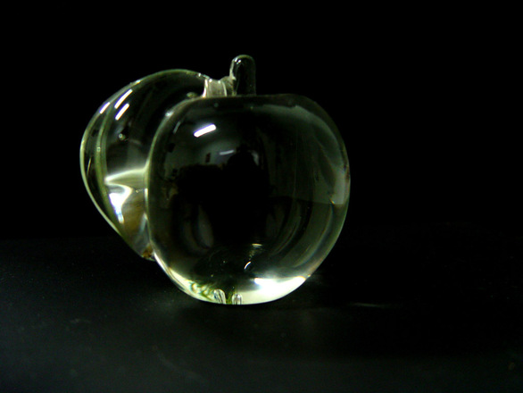

07.28.15
Posted in Australia, Patents at 11:04 am by Dr. Roy Schestowitz
Summary: Setting the record straight on the fight against software patents in New Zealand
HALF a decade ago we wrote a great deal about the patents debate in New Zealand because there was serious risk of software patents invading another country. Being a Five Eyes country, if it happens in New Zealand, then it can be further expanded to Australia, the United Kingdom, and Canada, just like many oppressive laws, especially in recent years (because “terrorism!” or “ISIS!” or something like that). Colonial/imperialist legacy has plenty to teach us about manufacturing and exploitation of public panic to sway public opinion and thereafter change laws.
A new article from the press in New Zealand points out the relationship between lobbying for software patents and so-called ‘trade’ deals (protectionism for multinationals). Paul Brislen is quoted sparingly and it says the following: “The negotiations had been conducted in secret and the New Zealand IT industry was concerned.”
Yes, same thing happened when it came to software patents. Large corporations such as Microsoft and IBM lobbied in secret.
Another quote: “One of the biggest issues for New Zealand was the country’s patent law and the issues for copyright.”
Copyright is an interesting one. As we now know, based on the Kim Dotcom case in New Zealand, the US Department of Justice and the FBI now apparently reign over New Zealand.
Another quote: “Parliament passed a new law about two years ago because the previous patent legislation did not cover software and IP, Mr Brislen said.”
Plutocrats and their corporations never rest until they get what they want. It can be a constant battle for power.
Another quote: “The legislation was held up for a long time while the Government debated how to respond to lobbying to introduce a law which would devalue patents.”
Patents needn’t be “devalued”, many need to be abolished, especially software patents.
Last quote: “The industry lobbied the Government to say software should not be subject to a patent.”
Well, that’s what companies from New Zealand said, but not foreign companies like Microsoft and IBM, which also used their lawyers in New Zealand to pressure the government,
Don’t let the media (especially in New Zealand) rewrite history. Software developers from New Zealand did a fine job mostly (not entirely because a loophole was left in tact, just like in Europe) defending themselves from patent aggressors and software monopolists from abroad. The article has flaws in it, but at least it recalls a big and important battle over software patents — one that Europe and the US hardly even have anymore. All that the press talks about right now is “trolls”. █
Permalink
 Send this to a friend
Send this to a friend
07.27.15
Posted in Patents at 4:51 am by Dr. Roy Schestowitz
Summary: A look at some of last week’s patent news, with imperative responses that criticise corporate exploitation of patents for protectionism (excluding and/or driving away the competition using legal threats)
AFTER many years of bitterness (over loss of focus in the media) we may finally write more about patents and will occasionally return to our old “Patents Roundup” series. The goal is to debate not “trolls” but the real issues with the patent system — issues that are much broader than patent trolls.
Technicolor
“Cisco sheds its set-top box business to Technicolor for $600m,” according to this new article. “Additionally,” wrote the author, “the pair have signed a long-term patent cross-licensing agreement though neither company has said which patents are involved.”
This is what’s known as a “thicket” and it helps remove competition from the market unless it is very well funded. By buying this business (Technicolor will have it all) and having just got these patents, Technicolor can now exercise yet more control, using patents, over its competition.
Alice/Section 101
Patent lawyers who persistently and openly promote software patents are clearly nervous about Alice/Section 101 because it kills software patents almost all the time (in high-profile cases). Watch this latest ‘damage control’ from IP Watchdog. It’s quite funny to watch actually.
After the ruling in the Alice case, what kind of software developer still tries to patent software? The billionaires’ fan press, Forbes, presents this story titled “The Nuts And Bolts Of Scaling A Company”. In it there’s propaganda: “Of course, now that the software is developed, she has filed patents.”
Yes. “Of course”. That’s what everyone should do, based on billionaires’ media. She decided to waste time and money because lawyers bamboozled her. Maybe the likes of Forbes (personification of people like Donald Trump) also bamboozled her. See [1] below. The Rupert Murdoch-owned WSJ is now comparing “Government-Enforced Monopolies” (patents) to ‘Free Market’. These super-rich people have no sense of shame, have they? To them, class war (looting by the oligarchs/plutocrats) is ‘Free Market’.
Anyone who still tries to patent software in the US clearly paid no attention to Alice and the subsequent rulings. Patent valuation for such patents sank, as even proponents of software patents (patent lawyers) care to admit. The only people to profit from such nonsense are lawyers.
Voip-Pal Patenting VOIP
According to this news, Voip-Pal.com Inc. is now busy patenting software, even where software is not patentable. “They controlled nodes in Canada, London and Denmark,” says the article, “used to prove the validity of their concept which was later patented.”
Why patent it? What’s the point? Is it even legal to patent software where they operate?
Fitbit
We recently wrote about Fitbit coming under a barrage of lawsuits. Well, Fitbit itself is hoarding a growing number of so-called ‘wearable’ patents. An article about this, which uses the “intellectual property rights” propaganda term in the headline, was published the other day. “But not everything “clever” can be patented,” it noted. Well it can, in the US, even when it’s not clever. Ask Sun’s engineers. They openly mocked the system for accepting just about every patent application and granting patents for about 92% of them, according to more recent statistics.
Another new article about Fitbit says: “According to Park, the secret to its success has been the combination of hardware and software, as well as distribution” (not patents).
If that is the case, then how come Fitbit continues to hoard patents? It arguably needs these for defence from sharks and aggressors such as Jawbone. In a perfect world, no such patents would be granted in the first place.
Scott Walker and Patent Lies
Scott Walker is a horrible — if not corrupt — politician. He gained notoriety in recent years (we have mentioned him almost a hundred times in our daily links) and this new article about him says:
Green Box said it held seven patents, but the U.S. Patent and Trademark Office lists no patents granted or assigned to Van Den Heuvel or the company.
As is often the case when it comes to Scott Walker, lies are the ‘norm’.
Marijuana Patents
Medical-marijuana patents may soon be granted because, according to this report, a company “filed two provisional U.S. patent applications for cannabis extracts” (so basically patents on banned drugs).
Nasty JDate
JDate, based on [2-5], is now misusing software patents to attack the competition, hoping to drive it out of business. Remind us again how software patents supposedly promote innovation? There is also some bizarre trademark bullying, with JDate claiming ownership of the letter “J” (which stands for Jewish in this case). See the articles below for the gory details. █
Related/contextual items from the news:
-
Those folks at the Wall Street Journal are really turning reality on its head. Today it ran a column by Robert Ingram, a former CEO of Glaxo Wellcome, complaining about efforts to pass “transparency” legislation in Massachusetts, New York and a number of other states.
This legislation would require drug companies to report their profits on certain expensive drugs, as well as government funding that contributed to their development.
[...]
This would eliminate all the distortions associated with patent monopolies, such as patent-protected prices that can be more than 100 times as much as the free-market price. This would eliminate all the ethical dilemmas about whether the government or private insurers should pay for expensive drugs like Sovaldi, since the drugs would be cheap. It would also eliminate the incentive to mislead doctors and the public about the safety and effectiveness of drugs in order to benefit from monopoly profits.
-
Today, Forbes unearthed a lawsuit from late last year that Jewish dating site JDate’s parent company filed against an app called JSwipe (also aimed at Jewish folk). It’s over the use of the letter J. The case is set to pick up again next month.
-
Jdate, the popular dating service responsible for more Jewish hookups than a bottle of Manischewitz, is playing hardball in the dog-eat-dog world of nice Jewish match-making.
Jdate’s parent company, Spark Networks, discreetly filed a lawsuit late last year against Jswipe, the ‘Tinder for Jews’ dating app, claiming intellectual property over the letter “J” within the Jewish dating scene (the company refers to the branding as the “J-family”).
-
Over the sounds of the packed crowd at the lower level of Noho hotspot “Acme,” on Tuesday evening, one phrase could consistently be heard: “I work in real estate.”
-
Additionally, Jdate claims it owns the patent on software that “confidentially determines matches and notifies users of mutual matches in feelings and interests.” Jswipe, like Tinder, notifies users when their romantic interest ‘swipes right’ on their picture, violating Jdate’s patent.
Permalink
Send this to a friend
Posted in America, Deception, Patents at 3:59 am by Dr. Roy Schestowitz
Summary: Looking at some of the latest propaganda for and against a bill which is already too watered-down to actually fix the US patent system
TECHRIGHTS has spent a lot of time explaining why the US patent system is dysfunctional beyond repair (Europe’s system, by contrast, can still be salvaged) and why so-called ‘reform’ in a political atmosphere that is dominated by large corporations is just a mirage [1, 2, 3, 4, 5, 6, 7, 8, 9]. The so-called Innovation Act or PATENT Act have already been derailed by lobbyists, employed by large corporations and very rich people who want protectionism in the form of patents (monopoly or “market exclusivity”, to use a euphemism).
All that ‘reforms’ speak about these days are “trolls”, even though patent trolls are far from the only issue. They are arguably just a symptom of a broken system and fixing a problem by redefining that problem won’t help solve the real problem. Joe Mullin, who has been focusing on patent trolls for nearly a decade, continues to focus on patent trolls and says that a “patent was invented [patents are being invented?] by Warren Sandvick, president of a Texas company called HasSex, which has an extremely trollish website and licensed the patent several times. Filed in 1998, and granted in 2002, the patent lays broad claim to a remotely controlled sexual “stimulation system,” one version of which involved a “second user interface” located remotely from the first.”
“This is clearly lobbying that exploits women to mask corporations and billionaires, but then again, we we noted many times before, that’s what The Hill is for.”The article focuses on sex (sex sells!) and trolls rather than matters pertaining to patent scope. Another site which obsesses over patent trolls because it is funded by large corporations including Microsoft weighs in, calling for the bogus ‘reform’ (dealing only with trolls) to go ahead. In it, Matt Levy responds to a nonsensical piece we mentioned the other day, from lobbyists’ favourite media (The Hill). Bill Watson took note of the propaganda from The Hill, paraphrasing as: “Patent reform will enable sneaky “foreign entities” to harm “the American family unit”” [the exact headline is “New patent bill would undermine economic growth, hurt families” and it does refer to “foreign entities” at the end].
Who wrote the article? By the description of oneself, “Nance is CEO and president of Concerned Women for America (CWA), the nation’s largest public policy women’s organization.”
Wait, we already know this. Like several other such groups, it is a front for lobbyists, exploiting women’s rights for corporate agenda. We covered such examples almost a decade ago. It’s not a new trick.
CMD wrote about this front group last year. Quoting the relevant parts: “This includes right-wing religious groups that oppose gay marriage and abortion rights, like Concerned Women for America, which has received at least $11.4 million from the Koch network since 2010, and Focus on the Family spinoff Citizen Link, which has received at least $10 million, including at least $885,000 this election cycle.”
There is also “Concerned Women for American Legislative Action Committee,” with a budget of $8,150,000, according to this “New List of the Dark Money Shell Game Groups Connected to the Kochs”.
So who opposes patent reform in this case? CMD’s SourceWatch has some good, well-organised background about “Concerned Women for America” and “Concerned Women for America Legislative Action Committee”. This is clearly lobbying that exploits women to mask corporations and billionaires, but then again, we we noted many times before, that’s what The Hill is for. That’s coming from the same billionaires who use sockpuppets to airbrush Wikipedia. █
Permalink
Send this to a friend
Posted in GNU/Linux, Google, Patents at 3:29 am by Dr. Roy Schestowitz
Large companies love Android but also love patents
Summary: A survey of last week’s news with special focus on Google and Android, which are trying to coexist and thrive in a world full of patent maximalists
ONCE upon a time there was a giant called Xerox that supposedly changed the world by packaging together components that can help replicate documents on a piece of paper. “Xerox” became a household name (or ‘officehold’ name), much like Hoover or Google, although neither was the first to do what it was doing (e.g. search), they just did something very well, perhaps much better than the rest of their industry, at the time they became synonymous with the function at least. Xerox leaned on patents for protectionism, causing all sorts of well-documented issues (not to be covered today) and IP Troll Tracker tells us that Xerox created an entity or a proxy do do its patent aggression. “Xerox is doing just that,” wrote Steph, “preventing its financial coffers from being depleted by abusing the patent system.”
Blackberry, which seems to be transitioning into an(other) Android OEM, just bought a firm, based on financial news sites. “The company’s software sales rose year-over-year,” says one source, “but some analysts were disappointed with the increase because it also included revenue from the licensing of technology patents.”
So Blackberry is already becoming parasitic with its patents, much as we feared a couple of years ago [1, 2] and a year ago [1, 2], alleging that Blackberry was becoming somewhat of a troll or feeder of so-called ‘patent assertion’ entities. What does Google (the Android steward) say about this now that it works with Blackberry on a more secure Android variant? After all, Free software such as Android is inherently incompatible with patents.
“What does “free patents” even mean? It’s a meaningless term.”As we pointed out the other day, some famous Android backers now turn to patents as well. An article by Glyn Moody has warned that “Chinese Smartphone Leader Xiaomi Adds Special New Feature In Order To Enter US Market — A Patent Hoard”. To quote Moody: “The smartphone sector is undergoing an upheaval at the moment, as Chinese manufacturers move up the global market share rankings. Already, the third, fourth and fifth places are occupied by Chinese companies: Huawei, Lenovo and Xiaomi. But it’s the last of these that has emerged as the real star. Although Xiaomi was only founded in 2010, in 2014, the company sold 61 million phones, and hopes to sell 100 million in 2015. Much of that growth will come from outside China: Xiaomi has already started selling its products across Southeast Asia, especially in India, as well as in Mexico, Turkey, Russia and Brazil.”
Google does not seem to mind this and just like Tesla or Panasonic, Google now uses its growing pile of patents for publicity stunts. Google can’t fight back against trolls as they have no products, but it sure likes to pretend to be a champion against trolls.
“Google wasting resources to fight patent troll,” wrote the President of the FFII about this, for it “won’t work anyway” (he linked to this article about “Troll Deterrent” and “Google holds patent giveaway for startups to ward off trolls”).
We have found nearly a hundred articles about this (effectively serving to amplify Google PR), including [1, 2, 3, 4, 5, 6, 7, 8, 9, 10, 11, 12, 13]. Nobody really challenges Google’s claims. It’s a PR charade. There are headlines like “Google Offers Free Patents To Halt The Trolls”. What does “free patents” even mean? It’s a meaningless term. It’s something we might expect lawyers to say because they compare ideas to “property” and implementation to “rights” (among other nonsensical metaphors).
One maker of many Android-running boards, Qualcomm, is now in trouble in Europe (we covered this last week) because of patent aggression that goes a long way back, elevating prices and marginalising competition. One writer from IDG calls the effort to split Qualcomm “patently absurd”. “The proposed breakup of Qualcomm by activist investment firm Jana Partners,” he wrote, “as reported by the Wall Street Journal this week, would be a blunder of biblical proportions. The equivalent of Delilah cutting off Samson’s hair while he slept, dividing Qualcomm into separately traded semiconductor and technology licensing businesses would produce two companies of lesser value than the former whole.”
The question is, will that reduce Qualcomm’s ability to exploit patents in a predatory fashion? Qualcomm has become very notorious for that (globally, not just in Europe). We’re not concerned about the “value [of] the former whole”, just the fairness of the competition and one’s ability to enter the market. It’s very relevant to Linux and Free software because whether people know this or not, many devices running Linux (more so than Windows) use stuff from Qualcomm and pay patent tax to Qualcomm even if they avoid Qualcomm.
There is some other patent news pertaining to Android, such as Google’s dumb CCTV Glasses (the Android-powered ‘Google Glass’). We are reminder of this effort and the ambition to hoard people’s CCTV stream, to be retained/stored on the server for searching, based on a new patent [1, 2. Google is treating human lives as an inventory or a resource, which raises all sorts of ethical questions. Apple is hardly better though because it wants to collect people’s fingerprints based on a new patent. Apple’s advocacy sites celebrate other dumb patents from Apple. Android is often being attacked by Apple using patents, so this is definitely relevant.
In summary, Android exists in a hostile environment. Despite that, Android has become the most dominant platform in the world (in terms of growth, sale numbers and so on), so we need to watch out for patent threats. There will be more of them in years to come and Microsoft is blackmailing Android supporters using patents, still. █
Permalink
Send this to a friend
07.26.15
Posted in Europe, Patents at 2:54 pm by Dr. Roy Schestowitz
Summary: Under the guise of ‘unification’ or ‘unity’, existing patent systems are being abandoned and more power gets passed to corrupt EPO officials
THE UPC, promoted by the EPO, still threatens to put Europe under an unprecedented patents regime that invites patent trolls and other nasties, including software patents. The UPC is not going away, it is spreading across Europe these days. Some patent lawyers’ assessment says it might start as early as next year, even before a British referendum (or any other public consultation in member states) takes place, showing that the will of corporations supersedes the public’s interests.
“For the United Kingdom there is the uncertainty of the ‘in-out’ referendum scheduled for 2017,” explains this one site, as it “will decide on the UK’s membership to the EU. Interestingly, if the UK leaves the EU after ratifying the Agreement on a unified patent court, there seems to be little danger to the unitary patent. (Well, no other danger than suffering the loss of a major EU economy, that is.) Fortunately, the ratification process in the UK should be finalized in 2016.”
An article by Pieter Callens (mentioned the other day) recently said that the “UK has formally indicated that its ratification process would be completed in spring 2016″ (less than a year from now).
“Rules are being relaxed to maximise protectionism for monopolies, just like in the domain of copyrights, even if the public is collectively harmed by these.”As recently as last month a paper was published that’s titled “A Unitary Patent for a (Dis)United Europe: The Long Shadow of History”. To quote the abstract: “The international patent system is undergoing a profound transformation towards ever greater global integration of institutions and harmonization of standards. The movement for unification of the European patent system is part of this wider global trend, but the unification goal has proved difficult to realize in Europe notwithstanding persistent efforts dating back to the end of WWII. This paper draws on confidential archived documents to retrace the early origins and evolution of the European unification movement to examine what can be learnt from history. In line with recent historiographies of the synergies and rivalries between international organizations and the European community, the paper reveals three phases in the evolution of norms and institutions in the unification movement in Europe. In the first phase, the European unification project is driven by the Council of Europe as part of an abstract ideal of European integration and is characterized by a ‘co-existence’ model based on common denominators in national laws. In the second phase, the harmonization agenda is taken over by the European Community and its rationale morphed into the community’s goal of (dis)integration of national patent laws and their replacement by a uniform and autonomous patent community system as a strategic tool for the realization of the common market. But the EC’s initiative is frustrated and results instead in partial harmonization with the adoption of the European Patent Convention in 1973 and the creation of the European Patent Organization. This opens a third phase and problematic for the European community which is having to integrate a pivotal external institution into a unified legal architecture to serve the community’s goals. The last part of the paper illustrates with a case study how the shadow of the past has left its imprint in the disjointed and overly complex legal architecture of the latest patent unification initiative in the form of the EU ‘patent package’ which was given the green light by the Grand Chamber of the Court of Justice of the European Union on 5th May 2015 and whose effect, it is argued, is to enlarge the role of the EPO whilst leaving the EPO outside the legal reach of the European Union.”
Another paper, titled “The Unitary Patent: New Rules for Internal Market Lawmaking?”, was also published a month ago. It states the following: “The EU’s patent plans look back on a long history of ups and downs. The ECJ has now dealt with different aspects of those plans, including the latest model that is now poised to enter into force, at three different occasions. That jurisprudence shifts from strict to relaxed, which invites speculation as to the reasons for that shift. More importantly however, the recently relaxed approach may have unforeseen and unwanted repercussions on integration dynamics in general: The novel legislative method of the UP Regulation might be a politically attractive, but legally dangerous tool for pushing flexibility in internal market integration far beyond the scope, possibilities and intention of territorial differentiation hitherto known under the classic mechanism of enhanced cooperation. In fact, the novel method complements territorial flexibility by allowing for flexibility in substantive law. This offers new possibilities, but also comes at higher costs for the unity, stability and coherence of EU integration and EU law.”
We have written about this subject for over half a decade and we have repeatedly explained why the notion of unification, harmonisation etc. (all are cheap euphemisms) is just a Trojan horse for perturbing existing patent systems in favour of large enterprises with many lobbyists. They hope to overthrow pertinent patent offices in member states in order to form a new system under the notorious and corrupt management which we know resides at the EPO. Rules are being relaxed to maximise protectionism for monopolies, just like in the domain of copyrights, even if the public is collectively harmed by these. █
Permalink
Send this to a friend
Posted in Patents at 2:19 pm by Dr. Roy Schestowitz
Summary: A few remarks on and a roundup of recent articles about HEVC, which we first wrote about in spring
ABOUT a week ago, well before the FOSS community began talking about it (apparently a hot topic over the weekend), we had spotted the latest news about HEVC, a cartel that we first heard about several months ago, well before it had a widely-recognised (for notoriety) name and a now-notorious press release (the respective Wikipedia page goes well over 2 years back, there are semi-official Web sites etc. so it’s not exactly news). Some people in the FOSS/multimedia world knew what was happening, but the details were rather vague at the time. We wrote about this back in April when Monty (the Ogg guy) mentioned it by name and noted the similarities to MPEG-LA. High Efficiency Video Coding (HEVC) had been turning into a patent parasite with its own ‘official’ troll. New patent cartels such as HEVC basically pile up yet more fees (like royalty stacking) and some of the earlier reports said that this one cartel alone (irrespective of the rest) wants “0.5% Of Every Content Owner/Distributor’s Gross Revenue For Higher Quality Video”” [1, 2]. To quote some background: “In March, a new group named HEVC Advance announced the formation of a new patent pool [see: New HEVC Patent Pool Launches Creating Confusion & Uncertainly In The Market] with the goal of compiling over 500 patents pertaining to HEVC technology. The pool of patent holders, which is “expected” to include GE, Technicolor, Dolby, Philips, and Mitsubishi Electric has just announced their royalty rates and are going directly after content owners and CE manufacturers. HEVC Advance wants 0.5% of content owners attributable gross revenue for each HEVC Video type. To put in perspective how unjust and unfair their licensing terms are, they want 0.5% of Netflix, Apple, Facebook, Amazon and every other content owner/distributor’s revenue, as it pertains to HEVC usage. Considering that most content owners and distributors plan to convert all of their videos over time to use the new High Efficiency Video Coding compression standard, companies like Facebook, Netflix and others would have to pay over $100M a year in licensing payments. The licensing terms apply to all content services that get revenue from advertising, subscription and PPV – which pretty much equals every content owner, OTT provider, broadcaster, sports league, satellite broadcaster and cable provider you can think of.”
“A New H.265 Patent Pool Is Causing Concerns” was the headline from Phoronix (a couple of days ago). A lot of people link to that right now. Actually, it’s not news. The site said that “[t]his H.265 patent pool is expected to be backed by GE, Dolby, Philips, and other names. The group, HEVC Advance, is interested in 0.5% of gross revenue from content owners for each HEVC video type. Some details on this patent pool can be found via the Streaming Media Blog. ”
Well, software patents continue to haunt multimedia and many articles about this [1, 2, 3, 4, 5, 6] (it was big new last week) did too little — if anything — to emphasise the horrible impact this can have on Free software.
According to the press release, this entity is “an independent licensing administrator”. Cartel is what it really is. Even Microsoft Peter, promoter of other such patent cartels (like the ones Microsoft is in), said that this one “threatens to derail 4K HEVC video streaming”.
The bottom line is that this is hardly news. It goes back to spring and well beforehand (depending on whether one talks about the patents or the formats/methods), but now we know more about the monetary demands. HEVC workarounds may be needed, just like WebM and Ogg (as Free software substitutes by which to bypass the MPEG cartel). We are likely to hear a lot more about HEVC in years to come. █
Permalink
Send this to a friend
07.22.15
Posted in Deception, Patents at 11:39 am by Dr. Roy Schestowitz
Summary: An outline of stories where the language used to describe patents is grossly distorted so as to bias the reality and mislead the audience/readers
TECHRIGHTS often links to articles about patents, including some awkward ones from patent lawyers, but rarely does it nitpick or criticise the warped terminology, which with the art of semantics helps rig the discussion. Just like in politics, language defines the debate, and choice of words can either glorify or demonise an idea. Today we will give some examples that we set aside over the past fortnight.
“Trade Secrets” and Patents (Opposites)
A lot of articles such as this one began to appear some days ago, mixing or mistaking patents for “trade secrets”, which are inherently very different (patents were originally introduced in order to discourage trade secrets and encourage publication). It was very hard to get the story straight based on the large majority of articles (we checked about a dozen). Ford is being sued over some rare combination of reverse engineering/’trade secrets’ but also claims pertaining to patents, according to few of the reports, including this reposted article from Bloomberg, which said: “Ford allegedly began developing its own version of Versata’s software by reverse engineering, according to court papers. The Dearborn, Michigan-based carmaker is also accused of disseminating Versata’s proprietary information to unauthorized users to create “a copycat configuration technology.””
So this is basically a combination of reverse engineering and patents. It’s an attack on Ford over patents and claims of reverse engineering. A lot of the media does an extremely poor job explaining this. the word “theft” or “steal” is used sparingly, subjecting readers to a trial by media (theft is a crime, but patent violation is not the same as theft and reverse engineering should arguably be legal everywhere).
“Stealing”, “Intellectual Property”, and “Innovation”
One of the grossest blogs out there (IP Watchdog, which we sometimes call “Watchtroll”) really beat its record. It not only used a propagandistic photo of a violent/militant bandit but also used three propaganda terms in one single headline: “Does Stealing Intellectual Property Boost Innovation?”
What a loaded, ugly headline (and a question). Patent lawyers who promote software patents really don’t try to come across as professional, do they? See the photo too. It’s worse than the Daily Fail, a notorious UK-based tabloid.
Patent Stacking/Royalty Stacking
There is a practice by which one company or several companies are stacking up patents and working to increase legal costs so as to discourage challenging of the patents, or simply drive a product out of the market. Watch the lawyers’ media framing this ugly strategy as “consolidation”. To quote:
No consolidation was granted where the petitions involved some non-overlapping grounds and arguments. However, the Board used its discretion to coordinate the date of the oral arguments to lessen the burden on the patent owner.
Software Patents by Another Name
Software patents are quite controversial, especially after Alice, which makes them weak. We have seen software patents alluded to in all sorts of ways that dodge the bad connotation, but how about “Behavioral Analytics”?
Patents as Objects
Patents are now sold like fruit and vegetables. Watch this piece titled “Improved Auction and Online Marketplace Patents Available from ICAP Patent Brokerage” or another one titled “Sleep, Temperature Analysis Wearables Patents Available”. They treat these like food. To quote one of these ridiculous pieces: “ICAP Patent Brokerage announces for sale patents disclosing methods for monitoring wakefulness and body temperature, available from inventor Gaby Badre (Bader). This portfolio is offered as part of the Internet of Things IP Auction, with a bidding deadline of July 30, 2015.”
They are truly selling them like some kind of objects, even though the patentor is supposed to be the holder. What has the patent system turned into? They are clearly perverting the logic behind patents when they were first introduced. Are these justified anymore? The meaning of patents has changed profoundly.
Buying Patents Like Products
“We’ve filed over 2,000 patents,” says this piece, “which is actually a lot, and we’re acquiring patents.” The saddest thing? It’s about Hugo Barra, known for his work on Android.
Protectionism
Patents can be a waste of time, money, and effort. “Westerners zealously guard their IPRs with patents and copyrights and so on,” said this piece the other day. What is “IPRs” anyway? Intellectual Property Rights? It’s a meaningless collective term that alludes to many separable things. It’s a bit like “cloud”.
Any protectionism by law (for the rich) can rely on metaphors like “intellect”, “right” and “property”, but just as in the case of that “cloud” buzzword, the reality is very different. It can simply means lock-in, surveillance, entrapment, and financial extortion. Nebulous terms make people oblivious and hence more gullible.
On “Discovering Patents”
IDG thinks that patents are being “discovered” because it says “newly discovered patents”. As if there’s some finite number of patents just waiting to be discovered, like gold buried beneath the ground. How foolish can the author be? Chemical elements can be discovered. Islands can be discovered (or colonised, or attacked). Patents are just an abstract concept, they’re man-made and they’re more like a musical composition. We never say that musicians “discover” a song when they come up with a new song.
Monopoly as “Market Exclusivity”
Monopoly is an ugly thing and a lot of literature exists to explain why monopolies are collectively harmful. So, ProactiveInvestors.com uses the propaganda terms of monopolisers and calls these “market exclusivity”. To quote: “Market exclusivity is a critical component of valuation. Patenting strategies, regulatory data exclusivity and product life-cycle management will give about 10 to 15 years of market exclusivity to most novel drugs.”
In reality this often means that poor people are left to die from curable diseases, just so that few companies that are often subsidised by governments (i.e. taxpayers) get to increase their private profits (going into few private pockets). Watch this new lobbying from the New Jersey press, titled “N.J. biotech companies need patent protection from Congress”. What they probably mean is that they want monopoly and protectionism. Competition is something they cannot tolerate.
Patent ‘Owners’
The patent maximalists, as usual, refer to patent applicants as owners, in the same way that once upon a time men from Africa were considered “property” to be “owned” by white men in the northern hemisphere. This whole notion of “ownership” of ideas is perverse, but given enough repetition in the corporate media people might come to take that all for granted and accept it, just like many people used to happily accept slavery and deem it “just” or “necessary”.
“Intellectual Ventures Combats Malaria” Nonsense
Reddit, which is a horrible Web site (reportedly in steep decline this month), is now grooming the world’s biggest patent troll (and strongly Microsoft-connected, too). Watch this kind of advertisement disguised as discussion. A reader of ours told us that he got banned by the moderator/s for merely questioning such dodgy ‘advertisements’ for an evil, reprehensible firm. It attacks practicing companies while hoarding patent monopolies by acquisition. This non-practicing (and thus by definition not good-doers or even doer) is owned by Nathan Myhrvold from Microsoft. █
“The last thing this company needs is another fucking [computer] language.”
–Nathan Myhrvold, Microsoft (now Intellectual Ventures)
Permalink
Send this to a friend
07.21.15
Posted in Apple, GNU/Linux, Google, Patents at 4:50 pm by Dr. Roy Schestowitz
Seeing the dark side of Apple…

Summary: Apple is desperately trying to stop Android from increasing its levels of dominance (in phones, tablets, watches, and so on), so Silicon Valley is lining up against Apple, antagonising its misuse/abuse of patents for anticompetitive purposes
APPLE became somewhat of a patent troll around 2010 when it filed its first anti-Android patent lawsuit, having threatened to do the same to Palm years beforehand (Tim Cook played a big role in these threats at the time). Microsoft and Apple are both bullies and they are not hiding it. They really hate Linux; they try to destroy it rather than adopt it like the rest of the industry, especially in Silicon Valley. With the exception of Microsoft, which habitually supports Apple’s court cases against Android, almost every significant company is now supporting Samsung‘s defence against Apple [1, 2, 3, 4, 5, 6, 7, 8, 9, 10, 11]. Engadget wrote: “Samsung has also found a powerful group of backers in its fight against Apple in court. According to a document unearthed by Inside Sources, Google, Facebook, eBay, Dell, HP and other big tech corporations have submitted a “friend of the court” brief on July 1st, supporting Samsung’s stance. The two companies have been embroiled in legal fisticuffs for years, ever since Apple first filed a lawsuit against Samsung for violating various intellectual properties, such as tap-to-zoom, sinle-finger scrolling and two-finger zooming, as well as edge-to-edge glass design, among other things.”
“Supporting Apple these days is supporting an arrogant bully, hell-bent on destroying Linux.”There is no “patent fight with Samsung” as some media puts it. It is Apple attacking Android by targeting a top Android entity other than Google (it is clear that Google has far greater an incentive to fight back). It is, by extension, an attack on Linux. Apple fans’ site keep bragging about new Apple patents, perhaps not caring to realise that they now support the equivalent of a giant patent troll, the world’s richest troll.
Google, by contrast, is trying to fix the patent system and to reduce litigation. As Mike Masnick put it a few days ago, “Google Revamps Patent Search To Actually Do What Patent Office Should Do” (that’s Masnick’s headline).
Masnick correctly recalls that this is not the first such effort from Google. To quote some background: “A few years ago, Google seemed to downgrade its patent search features, pulling away a separate “Google Patents” section and mixing it back into the main Google search. This seemed like a major step backwards, especially given how terrible the US Patent Office’s own patent search engine was. Google has tried to do a few things like launching a “prior art finder” and teaming up with StackExchange to help crowdsource prior art.”
Supporting Apple these days is supporting an arrogant bully, hell-bent on destroying Linux. Please don’t buy anything from Apple as it only makes this aggressor stronger. █
Permalink
Send this to a friend
« Previous Page — « Previous entries « Previous Page · Next Page » Next entries » — Next Page »


 Content is available under CC-BY-SA
Content is available under CC-BY-SA{kind=link}